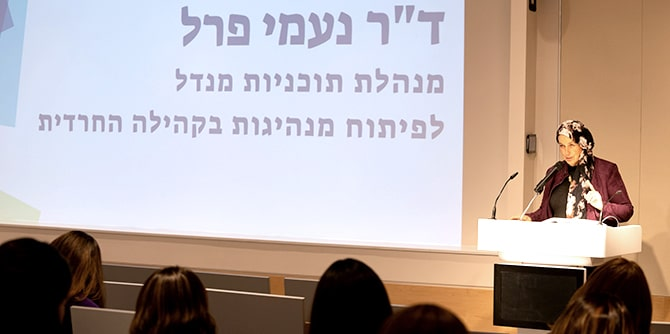

ד"ר נעמי פרל, מנהלת התוכנית (צילום: סימנים הפקות)
תוכנית מנדל לפיתוח מנהיגות בקהילה החרדית פועלת זה יותר מעשור, ולדברי ד"ר נעמי פרל, מנהלת התוכניות ובוגרת מחזור ט"ז בבית ספר מנדל למנהיגות חינוכית, מטרת התוכניות לטפח מנהיגות ומנהיגים שיעסקו בצורכי ציבור באמונה ברמה מקצועית גבוהה, ויפעלו לשגשוגה ולרווחתה של הקהילה, ולייצוגה המקצועי בממשל ובמערכות הציבוריות, תוך שמירה על נאמנות עמוקה לערכים ולנורמות של הציבור שממנו הם באים. הנחת היסוד היא שאנשי ונשות הקהילה החרדית הם שייטיבו לזהות את אתגריה של הקהילה ולהציע פתרונות יעילים.
במהלך התוכנית, הנמשכת שנתיים במתכונת של יום לימודים אחד בשבוע, עמיתי ועמיתות התוכנית לומדים לנסח חזון חברתי ולהפוך את החזון לתוכנית עבודה. התוכנית פועלת בהפרדה מגדרית מלאה, מאפשרת מרחב בטוח לשיח פנים-חרדי, ופועלת לחיזוק העוגנים ושורשי המחויבות החרדית, לצד היחשפות לתפיסה הפלורליסטית והדמוקרטית של קרן מנדל-ישראל.
חזון העתיד של התוכנית רואה בקהילה החרדית קהילה חמה בעלת תרבות עשירה ושורשים ערכיים, הנמצאת בתנופת שגשוג כלכלי, אישי, חברתי, ורוחני; קהילה מאירת פנים אשר חולקת את אוצרותיה עם החברה הישראלית; קהילה שחבריה הם בני ובנות תורה ואזרחים ואזרחיות פעילים המעורבים בהשכלה, בכלכלה, במנהיגות המדינה ובמאבק על שלומה וביטחונה, על אופיה וערכיה. אירוע הצגת הפרויקטים (צילום: סימנים הפקות)
אירוע הצגת הפרויקטים (צילום: סימנים הפקות)
במחזור ח' של תוכנית הנשים ארבע-עשרה עמיתות ממעלות שבצפון ועד רחובות שבמרכז-דרום, ממגוון תחומי עיסוק: נשות חינוך פורמלי ובלתי-פורמלי, בריאות הנפש, הייטק, רווחה, כלכלה, מחקר אקדמי, תזונה וחברה. כל עמיתות המחזור הן נשים בשלבי אמצע קריירה אשר הגיעו כדי לפתח מיזם חברתי שירחיב את מניפת ההשפעה שלהן בשדה המקצועי והחברתי. להלן כמה דוגמאות:
י"ש, עמיתה המנהלת מרכז קהילתי תורני, הגיעה לתוכנית בתקווה לשדרג את מערכי הפיתוח המקצועי בעולם החינוך הבלתי פורמלי. במהלך לימודיה בתוכנית נחשפה לשיתוף פעולה שהחל להתרקם בין בוגרי ועמיתי התוכנית לבין משטרת ישראל. במהלך אירוע משותף החליטה י"ש להציע את עצמה ואת המרכז הקהילתי שלה כפיילוט לפרויקט ארצי שמטרתו להרחיב ולהעמיק את האמון בין קהילות – ובמיוחד קהילות של מיעוטים – ובין משטרת ישראל. הצעתה התקבלה בברכה, וכיום – עוד בטרם סיימה את לימודיה במנדל – היא מנהלת פיילוט בשתי ערים, ובמסגרתו עברו עשרות קציני משטרה השתלמויות בהתאמה תרבותית.
העמיתה נ"ג הגיעה לתכנית לאחר סיום לימודיה בנוירו פסיכולוגיה קלינית שיקומית. היא החליטה שאין היא מוכנה להסתפק בפתיחת קליניקה פרטית, וחשה שעליה לפעול באופן ציבורי להעמקת ההיכרות של הקהילה החרדית עם עולם הטיפול הפסיכולוגי. נוסף על הובלה של פורום פסיכולוגים חרדים, השיקה נ"ג ביום הצגת הפרויקטים החודש את אתר האינטרנט שהקימה לאחסון פרקי הפודקאסט שיזמה והקליטה – פודקאסט הניתן להורדה גם במכשירים כשרים ולהעברה באמצעים דיגיטליים המקובלים בקהילה, ועוסק בהיכרות עם סוגיות פסיכולוגיות – תוך הנגשתן לציבור הרחב.
ח"ב, עובדת סוציאלית קלינית, הציגה באירוע את תשתית הפרויקט העתידי שהיא בונה לגישור ולחיבור בין שירותים חברתיים פנים-קהילתיים לבין שירותי הרווחה של המדינה. בדומה לשלוש עמיתות נוספות במחזור ח', היא הצביעה על אתגר אי-האמון של חברי הקהילה החרדית במוסדות ממשלתיים, ועל החשיבות שביצירת גשר בין הקהילה לבין השירותים הציבוריים בתחום הרווחה, הכלכלה והחינוך. ואכן, הדבר מאפיין לא מעט מבוגרי ובוגרות תוכניות מנדל למנהיגות בקהילה החרדית – השימוש במקצוענות שלהם וביכולתם לדבר גם בשפה "חרדית" וגם בשפה "ממלכתית" – בהיותם "אנשי גבול" המיטיבים לגשר בין חברי הקהילה, אפילו השמרנים ביותר, לבין מדינת ישראל. הגשר המיטבי, בעיני התוכנית ובוגריה, הוא גשר דו-צדדי שמסייע לחברה הישראלית להרוויח מהאוצרות ומהאיכויות שבקהילה החרדית, ולא רק לקשר את חברי הקהילה אל החברה הכללית שבתוכה היא מתקיימת.
הערב הסתיים במופע שירה משותפת של הזמרת אתי אנקרי, ובשיח על מנהיגות נשית, מקורותיה והשפעתה.
במקביל לעמיתות מחזור ח', אשר עתידות לסיים את לימודיהן בחודש יולי, לומדים במחזור ט' של תוכנית הגברים כ-20 עמיתים, ואלה ימשיכו לשנה ב' של התוכנית בתשפ"ג. כמו כן, בימים אלו אנו מסיימים את תהליך המיון לקראת פתיחת מחזור י' של התוכנית.
הכירו את הפרויקטים של עמיתות מחזור ח' >>
{kind=link}